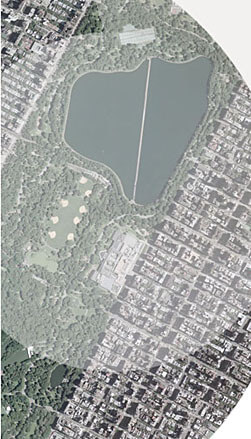

Author Archive for RogerS
Note: Links may not work or may take you to an archived page at the Internet Archive.
By RogerS October 29th, 2006
Categories: Internet tablet
Engadget’s photo of the next-generation Nokia Internet Tablet (the 870? the 880?) really, um, engages.
— Roger Sperberg
By RogerS July 20th, 2006
Categories: Internet tablet and Nokia 770
Personal Technology columnist Walt Mossberg reviews the Nokia 770 Internet Tablet in the Wall Street Journal, Not Yet the Holy Grail: Nokia’s Tiny Computer Is Crisp, but So Slow.
The review doesn’t say anything that hasn’t been written before,
giving the 770 its due on the compact size of the device, the marvelous
screen and the spendid web-browsing and faulting its other apps and its
choice of memory card and CPU. It is in fact so un-new, not even
mentioning VoIP using Google Talk, for instance, that I thought it was
a review written last December and inadvertently re-posted on the
occasion of OS 2006 showing up. But Mossberg advised me by email that
he got a review 770 only two weeks ago, so the comments are all current.
Mossberg falls into the camp of those who wish the 770 were more
like other devices — faster CPU, built-in keyboard — and who don’t give
Nokia any credit for releasing a product a third the price of the UMPC
and more than a year in advance of all but Sanyo’s device. So he can
say with a straight face, “If you … just want to surf the Web on a
small device with a great screen, the 770 might be for you. But for
most mainstream users, the 770 is a disappointment.” Perhaps next year
when all those clunky, heavy, expensive UMPCs start showing up, he’ll
appreciate what we have now.
By RogerS July 15th, 2006
Categories: Internet tablet, Maemo, browser and e-books
Springer,
a major publisher of “high-quality STM journals, book series, books
[and] reference works,” has just introduced its own portal for its
collection of scientific, technical and medical works. Already there
are about 11,000 titles available, including journal articles, book
chapters, monographs and atlases. About 3,000 titles are expected to be
added annually.
The big news here is that Springer is not requiring subscribers to
submit to some system of digital restrictions management. The works are
available in html and pdf form, libraries own ebooks they purchase in
perpetuity, and everything is readable on
the Nokia 770 Tnternet Tablet. Yes, you can use FBReader to read these works.
Smart move for Springer. Good news for Nokia 770 owners.
Thanks to Teleread for posting on this, having picked it up from the Hectic Pace blog by Andrew Pace.
By RogerS July 14th, 2006
Categories: Internet tablet and Nokia 770
The NY Times ran a story today
discussing the visionary Marshall Brown and his efforts to provide free
wireless access in 18 locations in 10 parks in New York City, via his
company called Wi-Fi Salon. This will benefit those “prescient enough to pack laptops or other paraphernalia critical to mobile connectivity,” the Times
says. It notes that “Mr. Brown’s attempt to plug into what he calls
‘neighborhood hot spots’ has unfolded in fits, starts and setbacks
since the city awarded him the parks contract in October 2004 after
Verizon withdrew from the project.”
The effort differs, btw, in a lot of ways from wi-fi clouds. The Times
writes, “This month Wi-Fi Salon activated the first of its wireless
‘hot spots’ in Battery Park, and Mr. Brown says the portal there will
offer a historical slide show, a tour of the Dutch gardens, and a
video-cam hookup to the Statue of Liberty. In Mr. Brown’s wireless
neighborhoods, connectivity is accompanied by educational content.”
Here’s more detail on the effort, with a surprise kicker in the last sentence:
Mr. Brown and the team of consultants who comprise Wi-Fi
Salon — “I love technology, but I know this much about myself:
I’m not detail-oriented enough to be a coder or an engineer” —
are resigned to running “in the red” for the first half of what is
essentially a three-year, $90,000 contract. Meaning, Wi-Fi Salon is
paying the city for the right to serve as its wireless conduit, with
all 18 locations expected to be functional by the end of August. He
admits it helps that his wife, Pauline, “is a high-powered corporate
executive” at Avon. She supports his wireless dream so long as he
doesn’t bring his gadgets along on vacations. Still, the arrangement
with the city was in danger of falling apart after Wi-Fi’s initial
sponsor reneged; a pact with Nokia, a Finnish manufacturer, salvaged
the situation.
Hm-m. Nokia saves the day. Well, it’s obvious that free and
ubiquitous wi-fi hot spots make Nokia 770 Internet Tablets (and UMPCs)
loads more practical. Forget the laptops the Times mentions.
This is definitely for devices meant for the walkaround web, like the
770 — 800-pixels wide and light enough to carry with you everywhere.
Of course, wi-fi outside buildings is the natural benefactor of the
walkaround web. I see
that it’s Nokia’s multimedia division that stepped into the breach,
with specific reference to Nokia’s N-series phones with built-in
wireless as well as the 770. I wonder what the precise link between
Nokia’s support and its 770 efforts is, or if it’s just a matter of
support for wireless across its lines. Whatever, I’m excited to hear
about it.
Way to go, Nokia!
It seems silly to write this without identifying the free wi-fi locations:
- Battery Park (already active)
- 8 locations in Central Park
- The Dairy
- Boathouse
- Summerstage
- Sheep Meadow
- Delacorte Theatre
- The Charles Dana Discovery Center
- The Pinetum
- Central Park Zoo
- Washington Square Park
- Union Square Park
- Riverside Park (Boat Basin/Cafe at 79th Street)
- Prospect Park (Boathouse, Picnic House)
- USTA Tennis Center at Corona Flushing Meadows park
- Orchard Beach concessions areas
- VanCortlandt Park golf house
- Pelham Bay Park golf house
By RogerS July 3rd, 2006
Categories: Internet tablet, Nokia 770, OS, pim, release and software
OK,
I know it sounds early, considering that I haven’t yet installed or
used IT 2006, the new OS for the Nokia 770 Internet Tablet. I don’t
know what it really does or doesn’t do well. But I’ve already started
forming my wish list for the next OS release.
My two biggest frustrations with the 770 are fairly personal and one
of them is so personal as to be idiosyncratic. But they both deal with
the unrealized potential of the 770 for note-taking and organization.
Btw, I don’t want the 770 to be a PIM replacement, though clearly
lots of other folk do. Phone numbers, addresses, alarm reminders — I’m
happy enough with those functions in my cell phone.
But note taking is a whole ’nother category.
No one believes tapping into Notes or an editor like AbiWord is fast
enough to make notes while you’re thinking or in a meeting. And don’t
even mention BT keyboards — I do my best thinking on the twenty-minute
walk between work and the train station.
I’ve been exploring use of the GTD system
propounded by David Allen in his book Getting Things Done,
and despite my highly electronified state, I’m heavily dependent on
scribbling things on 3×5 cards. No other way to get so much information
down quickly enough.
But I can’t use the handwriting recognition engine in the Nokia 770
because it just doesn’t work. (”Adequate” is a failing grade here.)
The screen resolution of the 770 is 225 pixels per inch — about five
times that of the UMPC and most laptops. It’s so high that it seems
ideal for actually being able to decipher handwriting and translate
scribbles into keystrokes.
I urge Nokia to license the PhatWare HWR engine used in Calligrapher
and PenOffice and use it instead of their current feeble software. I
really would use Notes then for just what it’s supposed to be, to jot
down quick notes.
As for my other wish — Like others, I’m wanting more
capability out of Opera. But in my case, giving me a complete desktop
Opera 9.0 wouldn’t satisfy me.
That’s because I like to use a TiddlyWiki-based micro-content wiki called MonkeyGTD.
(Jeremy Ruston wrote TW, and Simon Baird customized it to MonkeyGTD.)
TW and its derivants are single-html-page wikis, whose “tiddlies”
correspond to pages in a standard wiki and which typically are short
entries rather than the full-blown kinds of things you want and expect
from a full page. A TiddlyWiki is meant to be stored locally and is
perfect for tracking lots of cross-linked notes. All the programming in
TW is done in Javascript.
My problem is that Opera won’t save changes you make within it to an
html file, even one stored locally. (A modification lets you do this
through Java on a desktop machine with Opera.) So I’m ready for a
different browser, and if Nokia doesn’t supply it, I’d like to be able
to remove Opera and free up that space for a browser that can do what I
need.
Being able to quickly make notes with a viable HWR application and
to consult, add to and check off all the things I need to do in a small
browser-based GTD application — these are how I’d like to make the 770
work for me. Can we get those in the next go-around, please?
By RogerS July 3rd, 2006
Categories: Google Talk, IM, Internet tablet and OS
The new version of Internet Tablet 2006 OS has passed from beta to
release. Don’t know what date that was official, but it had been
promised for the end of the second quarter, which was Friday. I
consider anything before start of business today, Monday, as being
on-time, so congratulations are in order for Ari Jaaksi and his crew.
The big news of this second major OS release for the Nokia 770
Internet Tablet is of course the capability to make VoIP calls and to
use Nokia-supplied instant messaging, both via Google Talk. Users of
the beta have noted faster, more reliable operation in this release as
well. A large “finger” keyboard for easier input is a notable addition.
We heard about it from Ari Jaaksi’s blog,
which includes five screen captures and a pointer to
tableteer.nokia.com, a 770-specialized site that provides visitors who
arrive there on a 770 with special content (you get the regular Nokia
770 page with other computers). It is oriented towards new users, at
least at present, with guidance on how to take advantage of the 770’s
capabilities.
Btw, there’s a new Flash animation showing off the 770 at Nokia.com.
By RogerS June 9th, 2006
Categories: Google Talk, Internet tablet, Nokia 770 and e-books
Ari Jaaksi has the news:
jaaksi.blogspot.com/2006/06/maemo-20-os2006-beta-for-developers-is.html
He notes:
[M]aemo 2.0 [has the] tools needed for application
development at maemo. The purpose of this beta is to give tools for the
developers to get their apps & stuff ported on the new software.
And he adds:
The beta is beta! It has its problems but I believe it
is very usable for this purpose. It is not intended for regular
consumers but for developers. So be careful out there. It may bite!
Here we go! Soon it will be not just in these developers’ hands but in us users’ hands, with the updated apps too.
By RogerS June 2nd, 2006
Categories: Internet tablet and Nokia 770
In its story yesterday entitled PC’s That Are a Lot Smaller Than a Breadbox, the New York Times
discusses how you work with really small and really powerful walkaround
computers like the Nokia 770 Internet Tablet and the OQO-01.
“These microsize versions can do many of the simple tasks of their
bigger cousins, but are limited by the size of the screen. The tiny
processors, after all, are as powerful as the desktop machines of a few
years ago,” the article notes, going on to say, “To use more than a
stylus or a thin thumb keyboard, a user must stitch together a fully
functioning system out of parts that all speak the current lingua
franca, Bluetooth.”
It carefully notes that “while full-size keyboards are the tools
most commonly added to a cellphone or a hand-held, there are also mice,
headphones, microphones, digital cameras and even satellite navigation
receivers.”
“The advantage is that people can carry just the parts they need,”
the article advises, having already noted that such computers measure
their weight in ounces, not pounds.
The one user quoted in the article makes a salient comment: “I use
both this and my cellphone in the same manner. They’re read-only
devices.”
I found it odd that the new Sony Vaio UX Micro, subject of another story
in the paper this week, wasn’t mentioned even obliquely, since its
appearance with its unusable keyboard seems to be the spark for the Times’ interest.
I also note how the story kowtows to PDA and Blackberry interests by
not ridiculing the notion of surfing on a screen narrower than 800
pixels wide.
One day a paper of the Times’ alleged electronic
sophistication will not lump together PDAs, walkaround surfing tablets
like the 770, overloaded handhelds like the OQO and UMPCs, and small
notebooks. Perhaps the telling detail is the second photo illustrating
the story — of the FrogPad one-handed keyboard. Despite its title,
really the story isn’t about PC’s smaller than a breadbox but about
keyboards that you might want to use with one, when you’re not using it
as a read-only device.
Still I guess I am glad that the Nokia 770 is at least being recognized
and not ignored by the Times as it has been in the past.
By RogerS May 27th, 2006
Categories: Internet tablet and Nokia 770
Remember
what it was like last year? People talked about a portable internet
device and you had to imagine what it would really be like.
Sure, this was before the Nokia 770 Internet Tablet came out. But
people were putting the Sony PSP in this category, and the OQO and
there was talk of Windows and Macintosh tablets and there was the
PepperPad. And announcements for devices like the Sony Reader and iLiad
iRex and such appeared, and people wondered about PDAs fitting in here.
So: think back a bit. Imagine that portable internet device to come.
Imagine you could play songs and videos off the internet, or that were stored on its internal memory.
And you could play games.
Of course, you’d want your portable device to be lightweight (say, a half-pound).
And fit in your pocket.
Since it’s portable and you’re carrying it around everywhere, you’d
like this device to fill in the gap when you don’t want to surf.
You’d like to be able to IM your friends (without a per-message charge) and, heck, call them too. For free.
You’d like to use it to read, especially when you’re just sitting around. Like “on the throne.”
And you’d like access to all your information — email, documents,
pictures, spreadsheets, whatever — so you’d like your internet device
to run other computer programs, just like your regular computer.
Heck, for that matter, since it’s a small device and obviously
limited, you’d like to be able to use it to control your main computer
and serve as a window on apps running there.
You know what? I’m still thinking about the Nokia 770.
Somewhere along the line — surfing, size, general capabilities — all the other contenders fell away.
Can’t surf satisfactorily on a PDA. Can’t run apps on your e-Ink
device. Can’t carry your UMPC in your pocket (does “UM” really stand
for “ultra-mobile”? for who exactly, Shaqille O’Neal?).
Now what kind of genius enabled Nokia to build this 8 months before the earliest competitor and for hundreds of dollars less?
Smaller size and lighter weight than UMPCs. Bigger screen and more
versatile than Palms and PocketPCs. Multi-functioned unlike e-Ink
readers. Open sourced. Available. Affordable.
Gosh, don’t you love it when you get what you asked for?
By RogerS May 25th, 2006
Categories: Internet tablet, Nokia 770 and release
It was one year ago today that Nokia announced the Internet Tablet at LinuxWorld Expo in New York.
From the beginning there has been a lot of excitement for what the
Nokia 770 is and portends. And there’s been a lot of disappointment and
dismissal of the Nokia 770 for what it’s not.
But think about it. No other company has been able to get out a
device that is this portable and this powerful, that has an
800-pixel-wide display and that also sells for anywhere close to the
770’s price.
For everything that the 770 can do and for what it will be able to
do, I’m really grateful that the Nokia developers made so many correct
choices in designing this computer.
Thanks, everyone! Congratulations on your one-year anniversary!
|
|
|